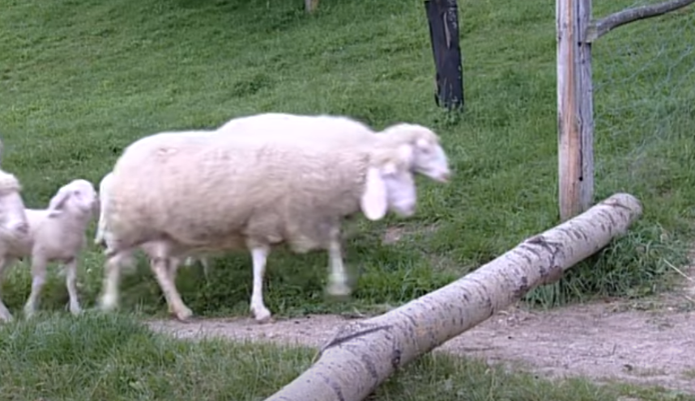

December 2021
Counting sheep yourself is so tiring. Why not have a computer do it for you?
To make the program, the first step was to find a looping video of a sheep crossing the screen. I found this video:
 Visit the original videoBut in all 20 minutes of footage, I couldn't find any good-looking segments where a single sheep crossed the screen all by itself. There was one sheep that came very close (I think it's the one at 4:03), so I just decided to splitscreen the footage to cut out the other sheep. You may notice artifacts of the splitscreen in the program.
The next step was to record myself counting to one quadrillion.
No, not really. Instead, I used a Javascript library that spells out whatever number you input as words. So it could convert 145233 into "One hundred forty-five thousand two hundred thirty-three".
Then, I could record myself saying all of the words that would be necessary to spell numbers up to 1 quadrillion. Each word was stored in a separate audio file. Then, I could have the program play the audio files in whatever order was needed to say any particular number.
Here are all the words I recorded, ordered alphabetically, because that's helpful:
billion eight eighteen eighty eleven fifteen fifty five forty four fourteen hundred million nine nineteen ninety one quadrillion quintillion seven seventeen seventy sextillion six sixteen sixty ten thirteen thirty thousand three trillion twelve twenty two
A few of these recordings were unused.